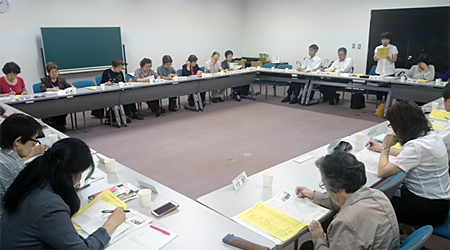

|
|
この秋の消費者大会に向けた第3回実行委員会が6月12日（木）、埼玉会館で消費者団体22団体と事務局31人が参加して開かれました。  最初に、前回5月27日に開催した第1回プレ学習会の開催結果（参加者数150名）について、当日寄せられたアンケート意見を交え、事務局より報告されました。 続けて事務局より、この間、第50回大会の基調報告に盛り込んでいく事項について意見を求めていましたが、集団的自衛権、医療介護、憲法、環境、食などに、意見が寄せられたことが報告されました。 全体会の役割分担、構成等について話し合いました 全体司会（新婦人と久喜市くらしの会）、大会アピールの提案者（コーペル）を確認しました。オープニングについて、歌の提案があり、スライド上映の企画内で検討すること、大会スローガンについても意見が交わされ、事務局でまとめて次回の実行委員会に提示する事を確認しました。 大会の記念講演について、話していただきたいことをもとに講演テーマの案を出し合いました。「私の人生を貫いているもの」「平和な社会で暮らすこと」など、今後、講師と相談しで決定していくことにしました。 『県内市町村消費生活関連事業調査』と消費者行政懇談のすすめ方を確認しました 「2014年度（平成26年度）県内市町村消費生活関連事業調査」の進捗状況について、事務局より具体的な調査の流れについて説明されました。協力いただける団体は、6月20日までに消団連事務局に連絡を頂くことにしました。尚、調査結果は大会資料別冊にしていきます。 第3回実行委員会では、各分科会の担当団体が決定し、大会までの分科会の準備（進め方）と当日のスケジュールが確認されました。その後、各分科会の担当に分かれて顔合わせをおこない、テーマや助言者について話し合いました。（＊なお、8月のところで「福島保養プロジェクト」の運営により、事務局が不在のところがあります） 最後に、県に要請する内容に関する意見、第2回プレ学習会への参加呼びかけ・次回実行委員会出欠連絡等を確認しました。 |